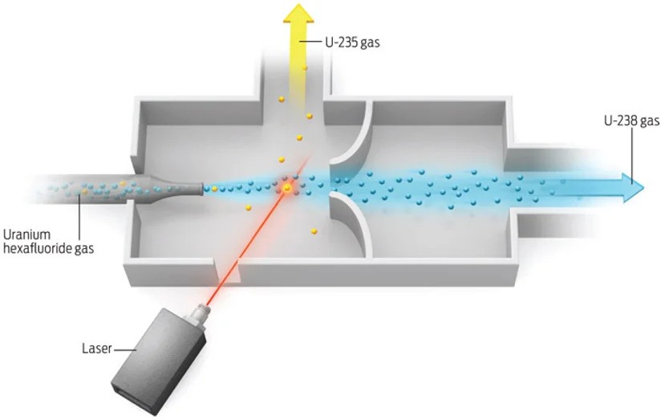

Laser Seperation
 This method is still under development for a possible use in Uranium Enrichment. This method is objectively the coolest as it uses really powerful monochromatic lasers to excite the electrons in UF6 and ionize it. These lasers can ionize a specific isotope while leaving another unaffected. The ionized isotope has its chemical properties changed which allows it to be seperated out, leaving us with enriched Uranium. The other methods are amazing but this is a whole another fricking level!
Other Methods:
Source: US Nuclear Regulatory Comission